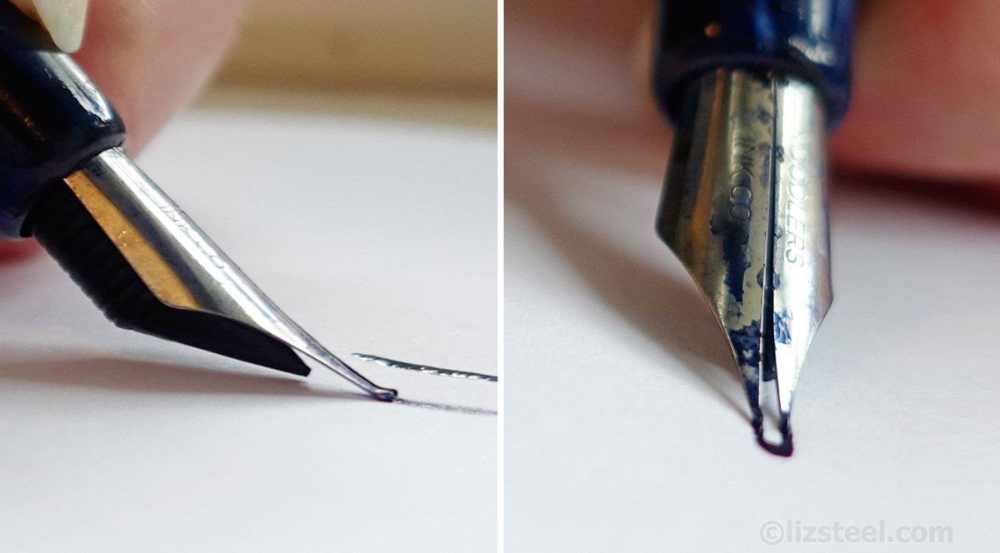

Past: What Inspired It All
Late 1870s
In the late 1870s, an inventor from Rhode Island was putting the finishing touches on a stylographic fountain pen, a type of pen which utilized a wire to act as a valve in applying ink to paper. In October 1880 that inventor, Alonzo T. Cross, was issued U.S. Patent No. 232804, issued under the title Stylographic Pen. This innovation provided a screw-plug to prevent users from filling ink into an air tube included in the pen’s housing and used the motion of air bubbles moving from the air tube into the ink chamber to force ink through to the point of the pen.
1945
On December 11th, 1945, Bíró was issued U.S. Patent No. 2390636, which is titled Writing Instrument, to protect his innovation. It claims a writing instrument with a reservoir for charging dense ink as well as a n air intake and a free ball tip. This invention did away with the problem of ink evaporation which requires frequent refilling of the ink chamber. This first ballpoint pen relied on gravity to draw ink towards the tip, requiring the user to hold the pen perfectly upright in order to write. Again with the help of his brother George, László was able to develop a pen which used capillary action to draw the ink towards the tip. A rough ball in the tip sponged up the ink and applied it evenly to a surface without the use of gravity.

Unknown Date: BIC 4-Color Pen
Bic 4C represented one of the early triumphs of democracy-in-design action. The pen was made to be popular, accessible and inexpensive. The consumer was given a semblance of choice, with each of the pen's cardinal directions representing a particular color ink. Arguably, it was part of a small group of products that combined over a period of time to create the 'expectation of color choice' that today's iMac has so compellingly capitalized on.
On the negative side, the Bic 4C came out at a time when pens were made to be disposable. It represented the apotheosis of disposable writing instruments -- the frankly terrible notion that not only could resources be tossed aside once even a portion of them was used up, but the idea that entire mechanisms could be disposed of wholesale as well. Ecologically speaking, the Bic 4C was a couple of cartridges short of a six-pack.